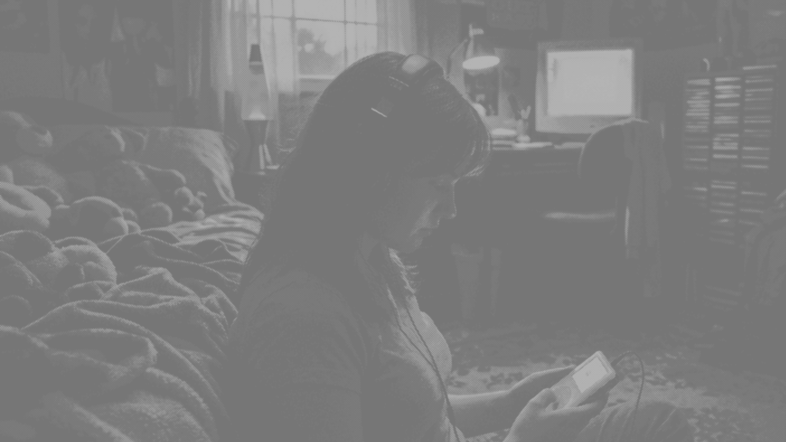
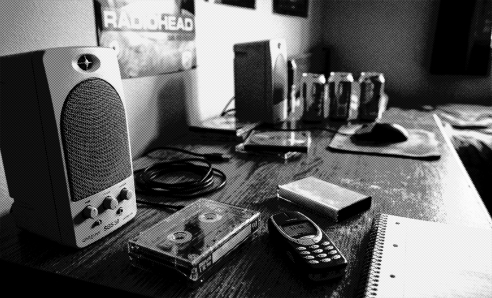

Истории устройств, технологий и повседневности сигналов, которые сопровождали жизнь в 1980–2000-х годах
Что происходит в мозге, когда мы слышим знакомый звук
Знакомый звук распознаётся мозгом почти мгновенно и активирует сразу несколько зон, связанных с памятью и эмоциями.
Почему короткий звук даёт быстрый дофамин
Короткий звук действует как быстрый сигнал вознаграждения, который мозг обрабатывает почти мгновенно.
Эволюция телевизионных заставок 90-х
Телевизионные заставки 90-х быстро изменялись вместе с развитием технологий и визуального языка телевидения.
Домашние технологии, которые ушли
Многие устройства из дома 1980–2000-х исчезли не только...
Как появился звук ICQ
Короткий звук «о-оу» стал одним из самых узнаваемых сигналов начала 2000-х. В статье разбираем, как появился этот звук, почему он так быстро закрепился в памяти и каким образом обычное уведомление превратилось в символ эпохи раннего интернета.
Какие звуки отличают миллениалов от зумеров
Разные поколения выросли в разных звуковых средах, и это напрямую влияет на то, что кажется знакомым и “своим”.

Ностальгия как способ справляться со стрессом
В моменты напряжения и неопределённости человек часто возвращается к знакомым звукам, образам и привычным деталям...
Почему модем 56k стал символом эпохи
Звук модема 56k стал узнаваемым не потому, что был приятным, а потому что сопровождал сам момент подключения к сети.
Почему уведомления звучат одинаково
Современные уведомления специально проектируются так...
Связь тревожности и ностальгии
Тревожность усиливает потребность в знакомом...
Как изменился звук города за 20 лет
Город за последние 20 лет стал звучать иначе из-за смены технологий и ритма жизни.

Почему звук сильнее визуала запускает воспоминания
Когда мы слышим знакомый звук, мозг...
История Windows XP startup sound
Короткий звук «о-оу» стал одним из самых узнаваемых сигналов начала 2000-х.
Тестовые сигналы телевидения и их роль
Тестовые сигналы телевидения изначально использовались для настройки изображения...